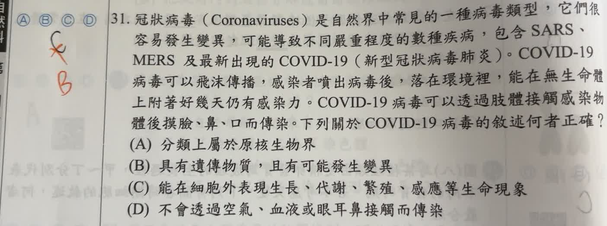

分享原卷｜第31題
完整原題
冠狀病毒（Coronaviruses）是自然界中常見的一種病毒類型，它們很容易發生變異，可能導致不同嚴重程度的數種疾病，包含SARS、MERS及最新出現的COVID-19（新型冠狀病毒肺炎）。COVID-19病毒可以飛沫傳播，感染者噴出病毒後，落在環境裡，能在無生命體上附著好幾天仍有感染力。COVID-19病毒可以透過肢體接觸感染物體後摸臉、鼻、口而傳染。下列關於COVID-19病毒的敘述何者正確？
(A) 分類上屬於原核生物界
(B) 具有遺傳物質，且有可能發生變異
(C) 能在細胞外表現生長、代謝、繁殖、感應等生命現象
(D) 不會透過空氣、血液或眼耳鼻接觸而傳染
先想一想，再查看答案、解說與原圖
原卷作答：原卷黑筆C，紅筆訂為B
正確答案：B。病毒具有遺傳物質，複製時可發生變異。
逐項解析
| 選項與原句 | 判讀 | 句意與判斷理由 |
|---|---|---|
| (A) 分類上屬於原核生物界 | 不選 | 病毒沒有細胞構造，不是五界分類中的原核生物。 |
| (B) 具有遺傳物質，且有可能發生變異 | 應選 | 病毒具有遺傳物質，複製時可發生變異。 |
| (C) 能在細胞外表現生長、代謝、繁殖、感應等生命現象 | 不選 | 仍有感染力不等於能在細胞外自行代謝、生長及繁殖。 |
| (D) 不會透過空氣、血液或眼耳鼻接觸而傳染 | 不選 | 整句否定不成立：造成COVID-19的病毒可經含病毒的呼吸道粒子在空氣中傳播。 |
詳細說明與解題步驟
病毒具有遺傳物質與蛋白質等成分，能發生變異，但沒有完整細胞構造，須利用活的宿主細胞才能複製。原核生物仍是具有細胞構造的生物，不能因病毒構造較簡單，就歸入原核生物界。因此B正確，A錯誤。
題幹說附在物體上仍有感染力，是病毒粒子保有感染細胞的能力，不是它能在物體表面自行生長、代謝或繁殖，所以C錯。D把多種途徑合在一句作否定，其中「不會透過空氣」已不正確，無須把血液或耳部也一律說成COVID-19的傳染途徑。
原題的名稱與傳播敘述照原卷保留。用語上，COVID-19是疾病名稱，造成此病的病毒稱SARS-CoV-2；解說傳播時，應包含呼吸道粒子在空氣中傳播，不能將舊題幹只提到的飛沫與物體接觸，當成排除其他傳播方式的完整列表。
核對依據：NHGRI的Virus說明，以及WHO「Coronavirus disease (COVID-19): How is it transmitted?」。
核對註記：已核對題幹、全部選項與必要材料；教材對應課次未確認，歸綜合。
原圖（僅本題）
